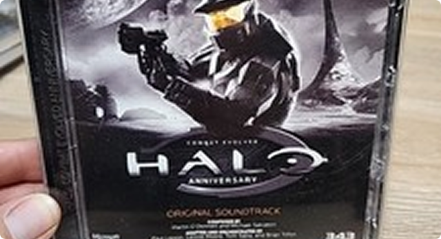
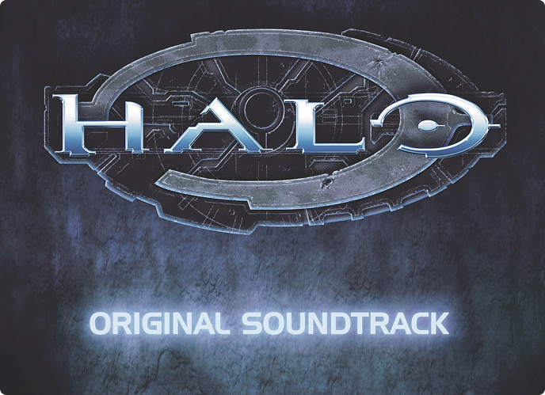

Halo en otros medios
Explora cómo el universo de Halo llegó más allá de los videojuegos, incluyendo libros, series y otros formatos.
Ver

Halo se ha consolidado como una de las franquicias más exitosas de la industria del entretenimiento interactivo. Desde su lanzamiento en 2001, junto con la consola Xbox, la serie no solo ha construido una base de jugadores extensa y fiel, sino también una identidad audiovisual reconocible, en la que la música ocupa un lugar central. Su tema principal, que suena al iniciar el juego, es quizá el elemento más emblemático: una composición solemne, con coros que evocan la liturgia y una orquestación épica, que en pocos segundos anuncia al jugador que se encuentra ante una historia de gran escala.

Ese tema fue compuesto por Martin O'Donnell y Michael Salvatori, quienes desarrollaron el estilo sonoro de la franquicia durante varios años. Su trabajo logró algo poco común: que una pieza musical de videojuego fuera recordada y reconocida incluso por personas que nunca han jugado la serie. Por esta razón, la música de Halo ha sido adoptada por distintos sectores de la comunidad, desde jugadores de larga data hasta músicos aficionados que han realizado versiones, covers y arreglos propios.
El reconocimiento musical se fue consolidando con la publicación de álbumes oficiales. La primera de estas grabaciones comenzó a aparecer alrededor de 2002, aproximadamente un año después del lanzamiento de Halo: Combat Evolved. Esta práctica se convirtió en una tradición que ha continuado con cada entrega de la línea principal, incluyendo Halo 2, Halo 3, Halo 4, Halo Reach y otros títulos asociados. Cada lanzamiento aportó nuevos temas y variaciones de los motivos originales, permitiendo a los seguidores escuchar la evolución de la historia a través del sonido.
Así, la banda sonora de Halo funciona como un registro paralelo de la saga, sus temas recurrentes marcan momentos clave de la narrativa, y sus álbumes oficiales ofrecen a los fans una forma de revivir la experiencia fuera del juego.

Explora cómo el universo de Halo llegó más allá de los videojuegos, incluyendo libros, series y otros formatos.
Ver
El contenido protegido por derechos de autor que pueda aparecer en este sitio, como imágenes, capturas de pantalla, ilustraciones, logotipos, fragmentos audiovisuales o referencias, se utiliza únicamente como material de apoyo, comentario, análisis, crítica, documentación o demostración de los temas tratados. La inclusión de estos materiales no pretende reclamar su propiedad ni transferir ningún derecho sobre ellos.